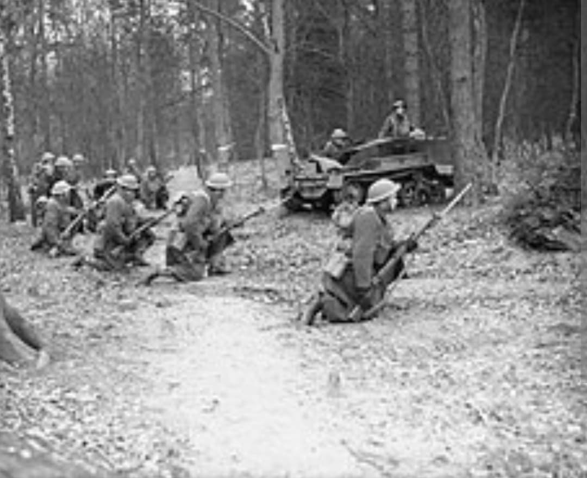
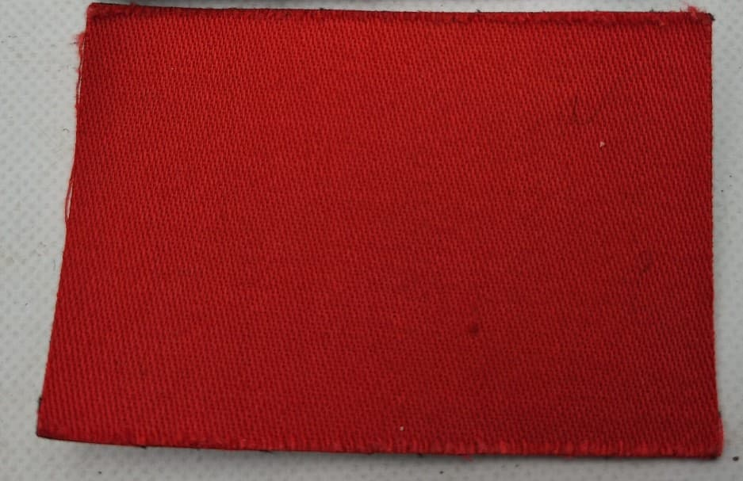
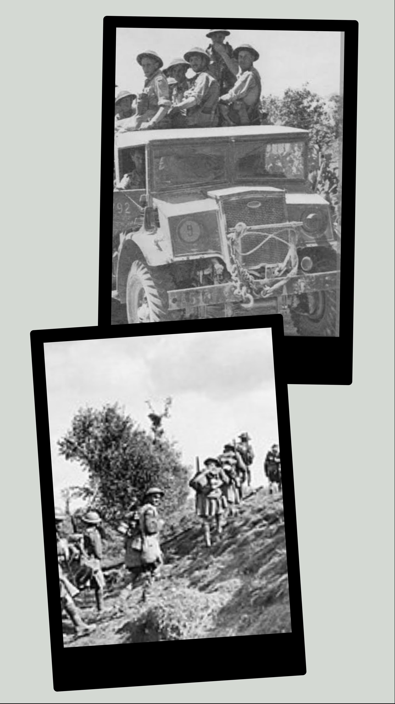

Les vétérans du drapeau à la feuille d'érable : de l'enfer d'Ortona en Italie à la libération triomphale des Pays-Bas

La 1st Canadian Infantry Division (1re division d'infanterie canadienne) est la première grande unité combattante envoyée par le Canada outre-mer dès décembre 1939. Surnommée avec fierté « The Old Red Patch » en raison de son insigne historique, elle s'est forgé une réputation de ténacité légendaire au cours des plus durs affrontements du conflit.
Fer de lance des forces canadiennes en Méditerranée, la division a écrit ses plus grandes pages d'histoire militaire dans le relief escarpé d'Italie, notamment lors du sanglant « Stalingrad italien » à Ortona, avant de rejoindre l'Europe du Nord-Ouest en 1945.
Mise sur pied dès la déclaration de guerre du Canada en septembre 1939, la division regroupe des régiments prestigieux venus de tout le pays (tels que le Royal 22e Régiment, les Seaforth Highlanders of Canada ou le Edmonton Regiment).
Son insigne d'épaule distinctif est un rectangle de drap rouge vif (*Red Patch*), hérité directement de la Première Guerre mondiale où la 1re division canadienne s'était déjà illustrée à la bataille de Vimy.

Débarquée en Sicile en juillet 1943 lors de l'opération *Husky* sous les ordres du major-général **Guy Simonds**, la 1st Canadian Infantry Division participe activement à la conquête de l'île avant de fouler le continent italien en septembre.
En décembre 1943, elle mène la terrible **bataille d'Ortona** contre les chasseurs parachutistes allemands (*Fallschirmjäger*). Dans ce combat urbain féroce maison par maison, les Canadiens inventent la technique du « trou de souris » (*mouse-holing*) en perçant les murs des habitations à l'explosif pour progresser sans sortir dans les rues balayées par le feu ennemi. Au printemps 1944, la division s'illustre de nouveau en perçant la ligne Hitler dans la vallée du Liri.

En mars 1945, dans le cadre de l'opération *Goldflake*, la 1st Canadian Infantry Division est transférée du front italien vers le front de l'Ouest pour rejoindre le 1er Corps canadien au sein de la 2e armée canadienne.
Elle participe activement aux opérations de nettoyage de l'ouest des Pays-Bas, libérant des villes comme Arnhem et Apeldoorn, et apportant un secours vital à la population néerlandaise affamée jusqu'à la capitulation allemande en mai 1945.
Page du Musée HOP WW2 – Section Unités & Divisions